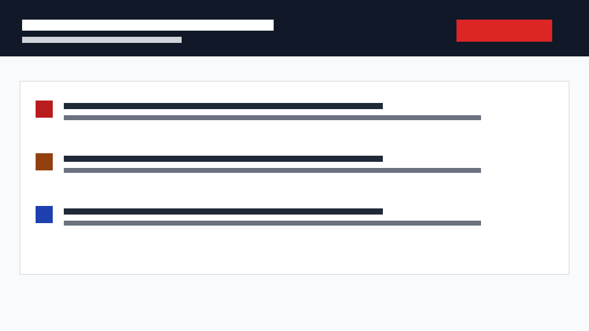

Ariada distribution channel evidence
Local known-bad Framer frame fixture scanned through the same audit core used by the plugin adapter.
Framer is a visual website builder and design canvas with a plugin system for small apps that interact with the editor. In this channel, Ariada treats Framer as a pre-publication design surface where accessibility issues can be found before a page is published.
Framer combines design and no-code site publishing, so the useful handoff point is earlier than a production crawler. This channel checks the current frame or page for design-mappable problems: contrast, target size, and missing text alternative or description markers.
Designers and agencies buy earlier feedback inside their Framer workflow. Product and marketing teams buy lower rework before legal, QA, or launch review. EU site owners buy EAA and WCAG risk reduction before public customer journeys go live.
Adjacent tools include Framer Marketplace plugins, Figma and Sketch design checks, Webflow and Wix publishing checks, and production accessibility scanners from Deque, Siteimprove, Evinced, AudioEye, and accessiBe.
Primary domains are Framer design canvases, no-code marketing sites, agency landing pages, EU digital-service journeys, and pre-publication accessibility review.
Technical connectors are framer.json, canvas mode, the Framer runtime object, src/framer-adapter.cjs, src/audit.cjs, and the local frame fixture.
Expected result: contrast, target-size, and text-alternative issues are present.
Observed result: contrast, target-size, text-alternative.
| Path | Rule | Severity | Remediation |
|---|---|---|---|
| Pricing hero frame > Muted tagline | contrast | serious | Raise contrast to at least 4.5:1 by changing text or background color. |
| Pricing hero frame > Icon button | target-size | serious | Increase the hit area to at least 44 by 44 px. |
| Pricing hero frame > Hero photo | text-alternative | serious | Add an "Alt: ..." node name, set ariadaAltText metadata, or mark the node "Decorative: ...". |
Direct screenshot evidence PNG

Live Framer dev-mode loading is explicitly blocked until a human signs in to Framer, enables Developer Tools in the plugin menu, runs npm run dev, and opens the development plugin from a Framer project canvas. The local fixture proves the audit path without using a hosted Framer account.
Short term distribution is local development plugin loading for internal design review. After human Framer verification, the next distribution options are private workspace distribution and Framer Marketplace submission.
The likely paid lane is an agency or team add-on: scan current Framer pages before publishing, export Ariada evidence, and map results into designer-owned fixes. Paid Ariada plans can add team evidence history, CLI parity, and compliance reporting.
This report covers competitors, domains, technical connectors, evidence, screenshot, blockers, distribution, monetization, sources.
{kind=link}